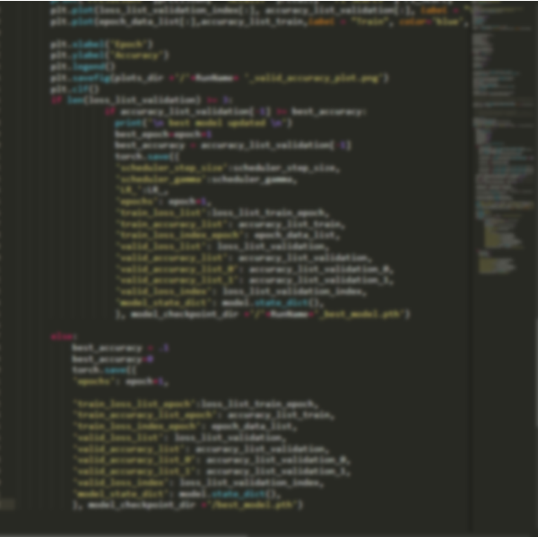

Thoughts and Reflections
Welcome to Joseph's blog
Beating the Streak: Intro
What makes predicting hitting streaks in baseball so hard? June 12, 2021
The beginnings of modern computational artificial intelligence can be traced back to the mid to late 20th century as basic machine learning algorithms and deep learning frameworks began to be developed. Even as early as the 1970, an article in the New England Journal of Medicine titled "Medicine and the computer — the promise and problems of change" began to predict the promise that advanced computation might have on the field of medicine.

Artificial Intelligence in Medicine
Will doctors be replaced by robots? May 19, 2021
The beginnings of modern computational artificial intelligence can be traced back to the mid to late 20th century as basic machine learning algorithms and deep learning frameworks began to be developed. Even as early as the 1970, an article in the New England Journal of Medicine titled "Medicine and the computer — the promise and problems of change" began to predict the promise that advanced computation might have on the field of medicine.
Blog
Just a place for some musings and ideas as I go through grad school. I'm far from an expert on anything at the moment, but hopefully I can provide some unique perspectives on things that I'm interested in.
Recommended Posts
-

Artificial Intelligence in Medicine
Will doctors be replaced by robots? -
Beating the Streak: Intro
What makes prerdicting hitting streaks so hard?
Tags